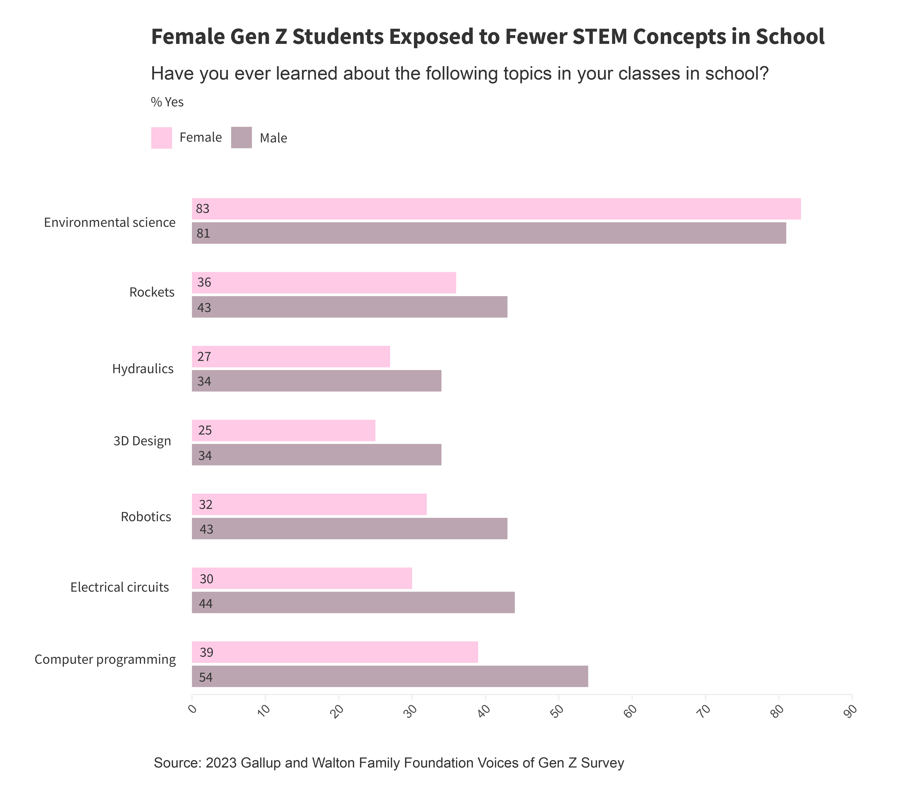
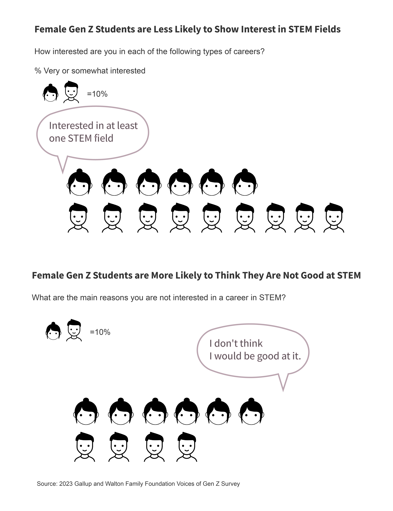

Where is “She” in STEM fields?
The gender gap in STEM-related occupations has remained significant over the past decade, both at the national and state levels.
Elaine Wei, a graduate student at UC Berkeley, has been studying architecture for nearly seven years. As she prepares to enter the workforce, this persistent gender imbalance has become a growing concern.
“Your boss will always be a man," she explains. "It creates a situation where women struggle to reach higher positions and earn more, which discourages many women architects from staying in the field.”
Wei's experience reflects a broader challenge that women face not just in architecture, but across STEM (Science, Technology, Engineering, and Mathematics) fields. For decades, women in STEM have been held back by persistent stereotypes—ideas that women are less suited for fields requiring strong logical analysis, problem-solving, or technical skills. These biases not only shape career paths but also discourage young girls from pursuing STEM subjects early on, reinforcing a male-dominated culture in industries critical to innovation and progress.
Wei's experience reflects a broader challenge that women face not just in architecture, but across STEM (Science, Technology, Engineering, and Mathematics) fields. For decades, women in STEM have been held back by persistent stereotypes—ideas that women are less suited for fields requiring strong logical analysis, problem-solving, or technical skills. These biases not only shape career paths but also discourage young girls from pursuing STEM subjects early on, reinforcing a male-dominated culture in industries critical to innovation and progress.
The gender gap in STEM has existed for a long time and remains significant, even in recent years.
What does the gap look like across the nation?
Data from the U.S. Census Bureau shows that in 2022, a total of 23.4 million workers aged 16 or older were employed in STEM occupations, almost double the number from 2012. While there was a growth in STEM jobs throughout the decade, the gender gap persists.
When comparing data from 2012 to 2022, the median percentage of women within various STEM occupations has remained relatively stable. Engineering occupations continue to have the lowest representation of females, while healthcare occupations still boast the highest proportion of women among all STEM fields.
Women are underrepresented in these fields, but for those who do work in them, do they earn the same pay as their male counterparts?
How about the situation at the state level?
By only looking at the most representative occupations in the STEM fields — computer and mathematic occupations (which used different data than the previous part analyzing national data) — at the state level, you could see that the state that has the narrowest gender gap only has 35.8% females employed, which is still a low proportion.
Utah is the state that has the widest gender gap. California, the home of tech company talent, also has less than 25% of women in the computer and mathematics industry.
Where is the future?
The future lies in the hands of today's students.
However, according to the latest data from the Gallup and Walton Family Foundation Voices of Gen Z survey, when students born between 1997 and 2011 were asked about their interest in STEM-related occupations, the gender gap remained evident.
When asked whether they had learned certain STEM-related topics in school, male students reported higher exposure than female students in six out of seven subjects.
The gaps in exposure to key STEM concepts are particularly pronounced in computer science and physics. For instance, 54% of males report learning about computer programming and coding in school—skills essential for careers in technology, manufacturing, and cybersecurity—compared to just 39% of females. Similarly, 44% of males say they have been taught about electrical circuits, a fundamental concept for fields like electrical engineering and the development of semiconductors and batteries, whereas only 30% of females have received the same instruction.
When asked the students whether they were interested in at least one STEM field, almost 90% of male students said very or somewhat interested, but only 63% of females responded the same. In terms of the reasons why they were not interested in a career in STEM, 61% of female students thought they were not good at it whereas 38% of males said so.
The gender gap in STEM can be traced back to early education, where students begin to develop their interests and shape their career goals. Schools play a pivotal role in exposing students to STEM concepts, yet the disparity in access to these subjects, particularly for girls, has long-term effects on their career path.
From schools to workplaces, there is still a long journey ahead to truly make space for "her" in STEM.